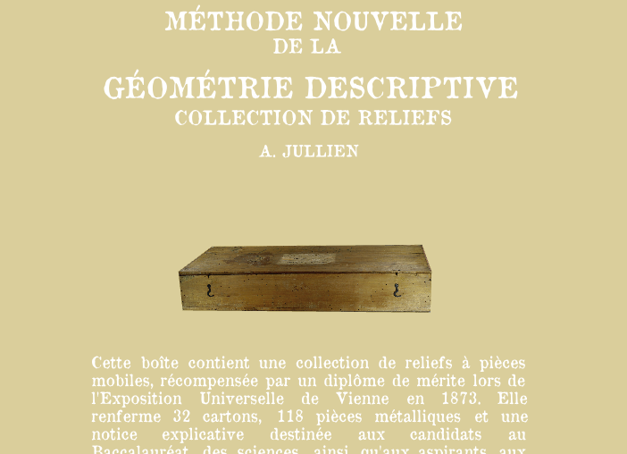

ESAA Avignon · 2024–2025
Boîte de géométrie descriptive, Méthode nouvelle (1873)
Réflexion sur la manière de préserver la valeur pédagogique d'un objet qui n'est plus manipulable, mais qui servait autrefois à l'apprentissage de la géométrie.
Ouvrir le site